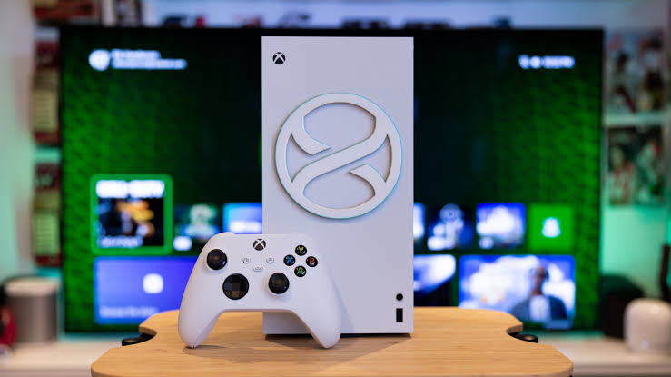

Gaming is the act of having Multi-Expertise in all things videogames including Playstation,Xbox and Nintendo.



Nigerian society is led to beleive that,
nowadays students focus more on videogames than on actual studying which makes them want to curb their children's use of mobile devices and desktops not knowing that gaming has a lot of intellectual and financial advantages.However,this page is not to tell parents what's good for their own children,its meant to teach children how to play games to full effectiveness.
There are about 10-40 million video games that our present time has to offer and they are all grouped into about 6-10 core genres.Knowing what kind of games suit your personality helps improve your gaming experience and maximize your enjoyment.Choosing a genre that doesn't suit your personality might damage or reduce your interest in video games permanently.If you are a mild-mannered person who doesn't like hard confrontations then you shoud go for Puzzle Games or Life-RPGs like Grand Mobile,Avakin Life or Citampi/Cisini Stories,If on the other hand,your'e a gun junkie who prefers Fast-Paced action and shooting then you need a game with high graphics and riduculous frame rates like:Call Of Duty,Garena Free Fire,Blood Strike or PUGB MOBILE.There are also games for people who would like a combination of both like Minecraft and Roblox.
The HUD is a very important concept that helps improve gameplay especially on mobile devices that don't require a controller or gamepad.The HUD diplays the location of all In-Game controls and it can be used to adjust the position of controllers to maximze effectiveness and conviniency of playing.An inconvinoent HUD will make it difficult to contend against other online players who have Easy-Play HUDs alredy developed.
The Gaming community is usually nice and friendly with few players with slanderous intent.
Here are some of the Heavy-Hitters in the Gaming Industry
-Call Of Duty(With about 13 differnt games)

-Garena Free Fire

-Minecraft(Java and Bedrock Editions)

-Roblox